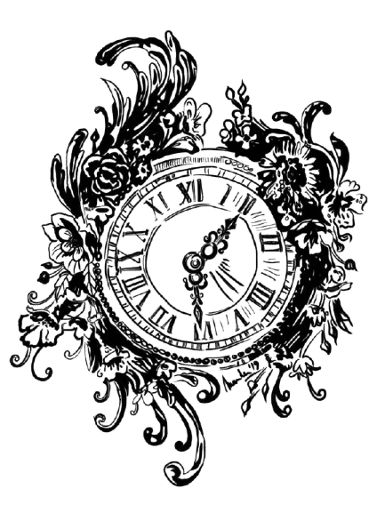
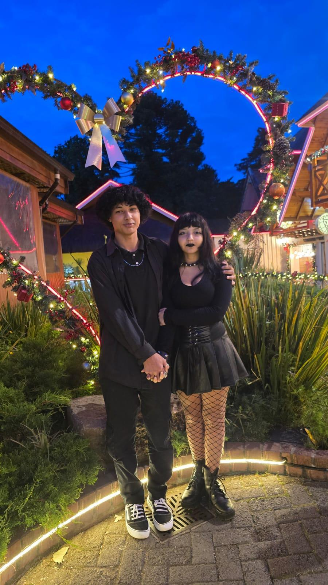
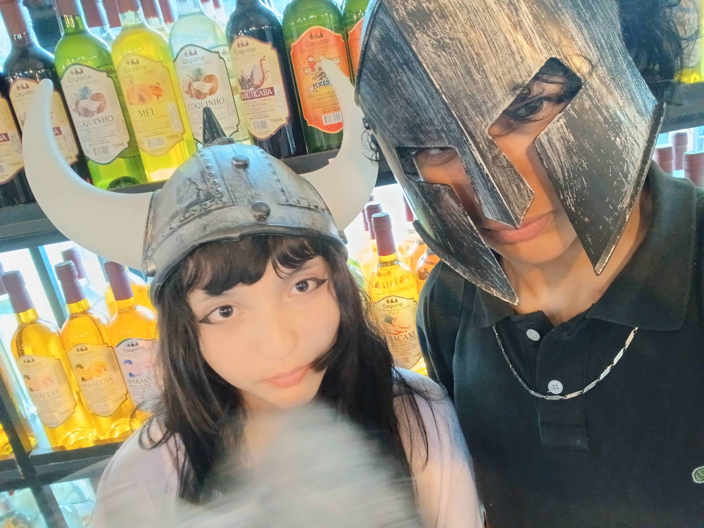
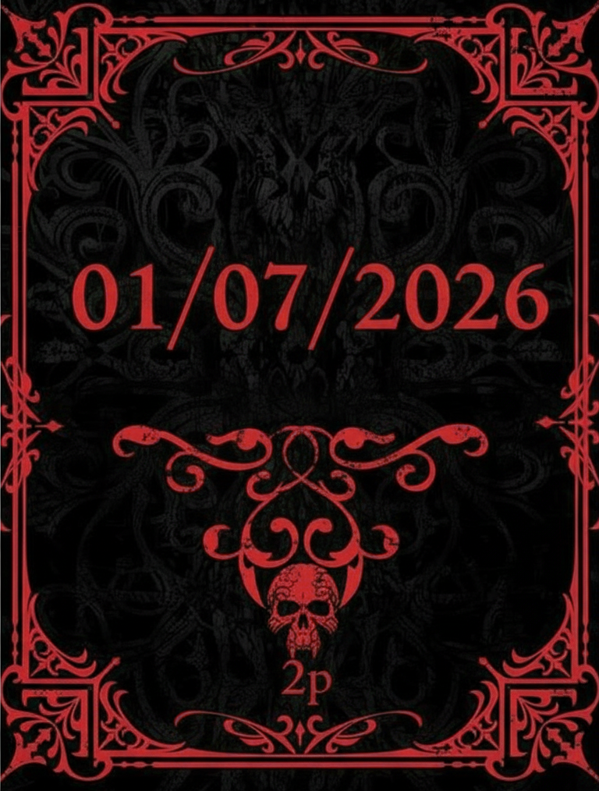

Capítulo I
Quando você chegou
Antes de qualquer memória ganhar forma, houve o instante em que sua presença começou a mudar o peso dos meus dias.
❦
Antes de tocar o relógio, recolha a luz que irá conduzir seus passos por entre as páginas.
Clique na vela para tomá-la em suas mãos.

⚜Um ano de devoção, memória e eternidade.
Antes de qualquer memória ganhar forma, houve o instante em que sua presença começou a mudar o peso dos meus dias.
Alguns amores não apenas entram na vida: eles reorganizam a casa inteira por dentro.
Entre risos, domingos, mensagens, silêncio e detalhes bobos, nós criamos lugares que só pertencem a nós dois.
Há lembranças que não envelhecem. Elas apenas ficam mais silenciosas, mais profundas, mais nossas.
Não prometo perfeição. Prometo presença, escolha, cuidado e a vontade honesta de continuar aprendendo a amar você melhor.
As próximas páginas guardam o que palavras comuns não conseguiram segurar sozinhas.
Dizem que algumas histórias começam num encontro. A nossa, porém, pareceu nascer antes mesmo do primeiro instante, como se uma engrenagem antiga enfim tivesse encontrado o seu par exato. Não aconteceu de uma só vez; foi se revelando aos poucos, até se tornar uma das razões mais bonitas que encontrei para continuar.
É impossível negar o quanto nós dois mudamos ao longo destes meses. Tantas coisas aconteceram, tantos sentimentos nasceram, e, pouco a pouco, tudo começou a encontrar o próprio lugar. O que antes era promessa se tornou presença, e o que era dúvida passou a fazer sentido.
A mudança não acontece de uma vez; ela chega devagar, como algo que prefere florescer em silêncio. Foi assim conosco. Em cada riso, em cada conversa, em cada escolha e em cada instante, algo bonito continuou a nascer entre nós.
Há amores que gritam. O meu por ti se ajoelha, silencioso e inteiro, como quem reconhece a própria casa ao longe. Quando olho para trás e percebo o quanto o nosso amor mudou a minha vida, tudo em mim encontra uma paz que eu nunca havia conhecido. É um sentimento impossível de explicar por completo.

O mar foi o primeiro altar que reconheci ao teu lado. Nele, tudo parecia confirmar que o tempo podia ser gentil conosco. Foi lá que, além de nos tornarmos um pela primeira vez, eu me senti verdadeiramente feliz. Carrego lembranças intensas demais daquele período; tão intensas que precisei guardar um pouco dele em cada site que fiz para nós.

Foi nos gestos pequenos que entendi a raridade do que tínhamos. O extraordinário começou a morar no cotidiano, e hoje ele vive em tudo. No almoço de domingo, nas conversas com sua família, nas risadas partilhadas, no silêncio confortável, e também na intimidade da sua cama, onde nosso amor encontra infinitas formas de existir.
Em certos dias, a ideia de um mundo sem você me pareceu insuportável. Pensar numa vida sem os nossos beijos, sem a tua presença e sem o nosso amor faz tudo perder a cor. Mas só de saber que pude te encontrar nesta vida cheia de desvios, numa época em que até o eterno parece efêmero, já me sinto privilegiado. Porque, aconteça o que acontecer, nada poderá apagar o que vivemos.
Se eu pudesse proteger algo do desgaste dos dias, escolheria o teu riso. É nele que mora a prova mais leve da eternidade, e é nele que o tempo falha em destruir o que realmente importa.
Teu amor não me tornou menos intenso; tornou a minha intensidade habitável. Em ti encontrei lugar para existir por inteiro, sem precisar me diminuir para caber.
Em ti encontrei espaço para ser inteiro. Não precisei reduzir o meu coração; precisei apenas deixá-lo repousar. E foi nesse repouso que descobri a forma mais sincera do amor.
Permanecer contigo deixou de ser apenas desejo e passou a ser instinto. Como respirar, como voltar, como reconhecer o caminho mesmo de olhos fechados.
Há um momento em que o amor já não bate à porta: ele entra, acende a casa e transforma o futuro num lugar possível. Desde então, tudo o que imagino adiante tem a tua presença guardada dentro.
Se um dia me pedirem a palavra mais bonita que aprendi vivendo, eu não direi eternidade. Direi o teu nome, porque foi nele que coube tudo aquilo que eu nunca soube explicar com exatidão, mas sempre senti por inteiro.
